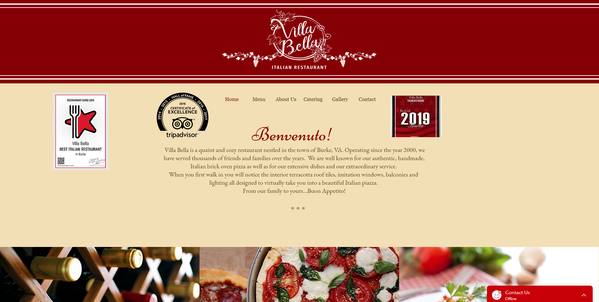
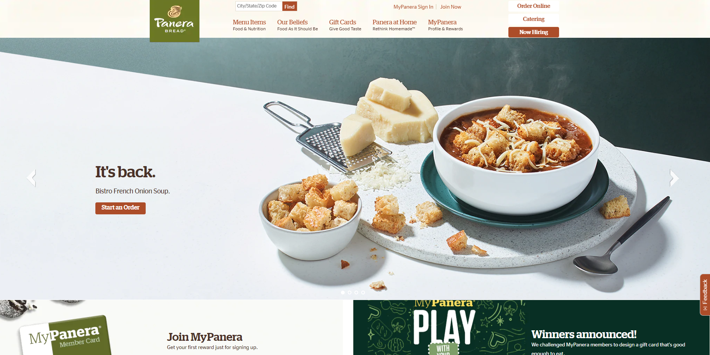
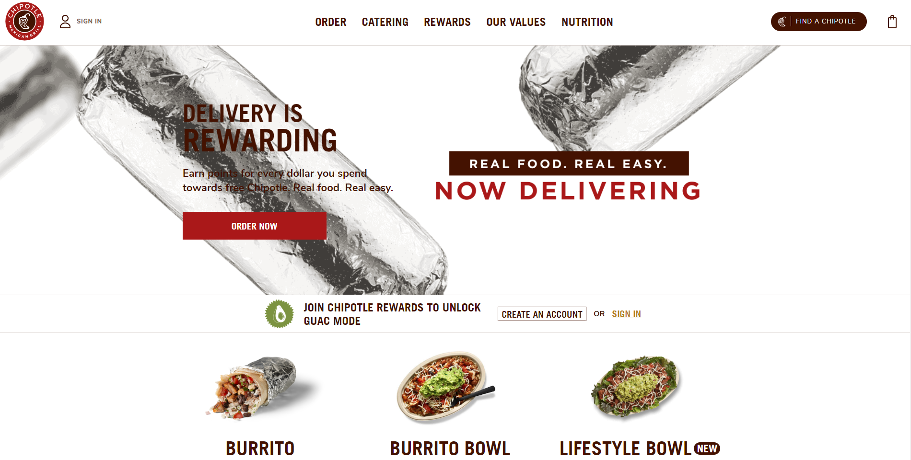
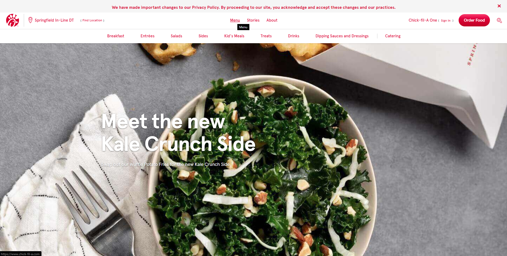
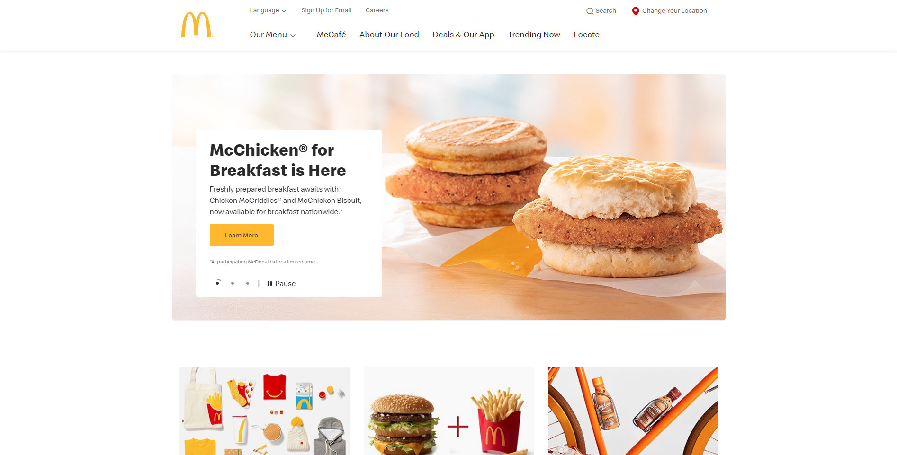

There are several components to the Villa Bella website that are well done. The layout of the website is simplistic and straightforward. Additionally, the color scheme of the website blends well with the style of food they are selling. It looks clean, thoughtful, and approachable for users to procure food. The structure suits its intended purpose for selling Italian food.

The website itself follows a home-style, fresh feeling for the target audience. However, the page has a vast amount of space dedicated to images, rather than the main focus of the page. As seen in the screenshot, ordering food online, which may be the main purpose of someone using the website, has a small button on the page header. Additionally, it could be challenging for users to find it and may waste time looking for the online ordering button at the bottom of the page. The page does a good job in promoting their reqards program, but reducing the space for the homepage picture and increasing the readability for ordering would be areas for potential improvement.

This site has good information about the food chain distributed throughout the page. The only area I did not like was the gif of the falling burritos in the background, which were distracting from the reason for being on the page. However, the ordering button was on the gif, and the moving image does draw the audience's attention to the button. The images of the food are inticing for the intended audience, and they look appetizing. The clean design of the website lends itself to a positive user experience except for the falling burritos.

The dropdown menus for the header buttons are well-designed; each page that the menu links to is associated with a specific reason why someone might be using their website. The main image the website presented was a kale side, which the audience may not be planning on getting, especially for a chicken sandwich chain. The well-known logo is well placed, and the red text on white background helps to make the button options stand out. This increases website readability and navigation.

The logo is located in a good spot, and the images chosen for the site represent the franchise very well. The buttons selected for the top of the page may not be needed for the intended audience, and they could probably just have three submenus with the menu of food, information on their mobile applicaion, and information on careers with them. Most viewers would most likely not pay attention to what may be trending for McDonald's.
